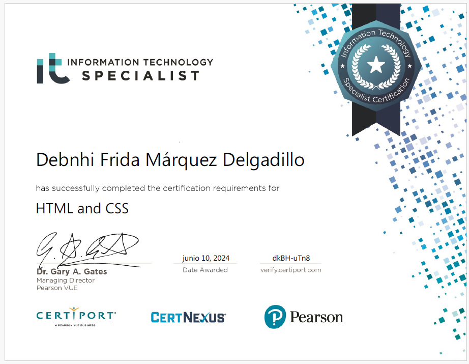
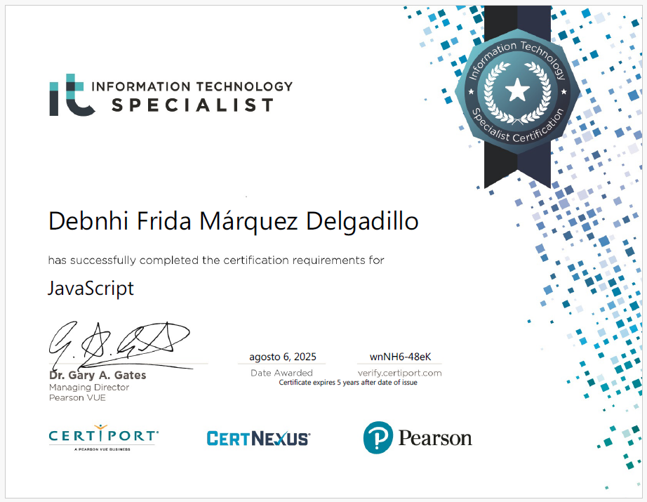

ACERCA DE MÍ
Estudiante de Ingeniería en TI con sólidas bases en desarrollo web (PHP, JavaScript, HTML/CSS) y gestión de bases de datos. Destaco por mi enfoque analítico y rigor en la elaboración de reportes.
Cuento con experiencia probada en atención al cliente y gestión operativa, lo que me ha dotado de excelentes habilidades de comunicación asertiva y resolución de problemas. Busco oportunidades para aplicar mis conocimientos técnicos y certificarme en nuevas tecnologías para optimizar procesos organizacionales.
EXPERIENCIA LABORAL
• AUXILIAR DE PISO
Tienda de ropa Santory
Temporada vacacional Diciembre 2025 - Enero 2026
- Mantenimiento del orden visual y soporte logístico durante temporadas de alta demanda.
- Ejecución de un esquema de rotación transversal para cubrir diversas funciones operativas y soporte al equipo de trabajo.
- Reconocimiento por parte de la gerencia debido a la calidad del desempeño y compromiso.
• AUXILIAR DE DEPÓSITO Y COBRANZA
Depósito el Pariente
2025 - Actualidad
- Atención directa al cliente y administración operativa diaria del punto de venta.
- Gestión de cartera vencida y cuentas por cobrar, realizando rutas de cobranza a clientes comerciales para asegurar el flujo de caja.
CERTIFICADOS

